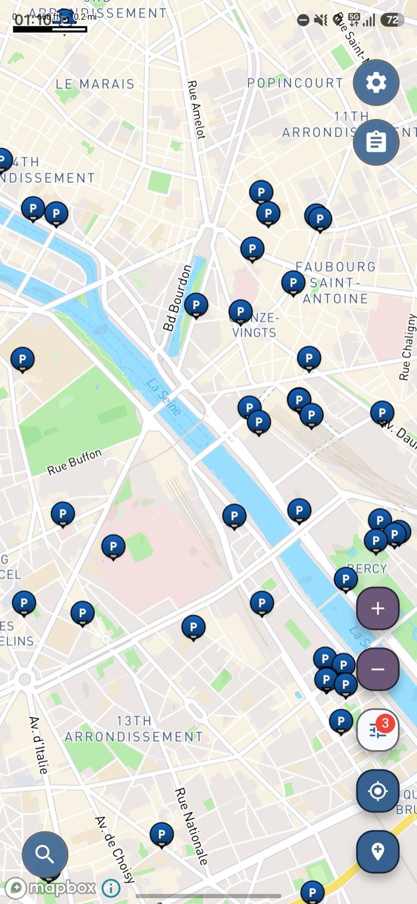

여행에 유용한 지도
어디서나 주차 공간을 찾으세요
237개국에 걸쳐 110만 개 이상의 주차 장소(일반 주차장, 다층 및 지하 주차장, 노상 주차 구역 등)를 제공하며, 그중 81만 개는 무료로 이용 가능합니다.
무료 · iOS 및 Android

보이저 맵스 앱에 표시된 파리 도심의 주차 장소들.
낯선 도시에서 주차가 여전히 골칫거리인 이유
- 낯선 곳에 도착했을 때 가장 먼저 떠오르는 질문은 목적지가 아니라, 차를 어디에 주차할지입니다.
- 일반적인 지도 검색 결과에서는 주차장이 무료인지, 유료인지, 지붕이 있는 실내 주차장인지, 아니면 아예 운영 중인지 등의 정보가 종종 누락되어 있습니다.
- 도심 전체를 한 바퀴 도는 것은 연료와 시간을 낭비하는 것이며, 근처에 있는 다른 장소를 이용했다면 이를 절약할 수 있었을 것입니다.
우회로가 아닌, 필요한 장소를 찾는 운전자들을 위해 제작되었습니다.
주차는 ‘보이저 맵스’에서 가장 큰 카테고리로, 노상 주차장에서부터 다층 및 지하 주차장에 이르기까지 전 세계 1,174,855곳의 주차 정보를 제공합니다. 지도에서 주차 정보만 필터링하여 주변의 주차 옵션을 확인하면, 관련 없는 결과가 방해받지 않고 편리하게 정보를 확인할 수 있습니다.
주차 장소의 약 3분의 2가 무료인 것으로 기록되어 있으므로, 근처에 무료로 이용할 수 있는 주차 공간이 있는 경우가 많습니다.
237개 국가 및 지역의 주차 정보를 제공하며, 유럽과 북미의 대도시를 넘어 훨씬 더 넓은 지역에서 유용하게 활용할 수 있습니다.
정보가 등록된 곳의 경우, 이용 요금, 휠체어 접근성, 운영 시간 및 앱에서 바로 전화할 수 있는 전화번호도 확인할 수 있습니다.
주변 주차장 찾기
앱을 실행하면 현재 위치 주변의 주차 옵션을 확인할 수 있습니다.
로드 트립, 도시 여행, 일상적인 운전을 위한 주차 지도
주차 지도란, 대개 낯선 도심을 빙빙 돌며 헤매는 순간, 막상 필요할 때만 떠올리게 되는 도구 중 하나입니다. 보이저 맵스에는 전 세계 1,174,855곳의 주차 위치(일반 지도에서는 빠지기 쉬운 주차장, 다층 및 지하 주차장, 길가 주차 공간 등)가 수록되어 있어, 도착하기 전부터 차를 어디에 세워야 할지 미리 알 수 있습니다.
비용은 대개 결정적인 요소이며, 해당 장소 중 810,544곳이 무료로 이용 가능한 것으로 기록되어 있습니다. 로드 트립, 캠핑카 여행, 혹은 낯선 도시에서의 주말 여행을 계획할 때, 지도를 주차장 정보로만 필터링하고 근처의 무료 주차장을 확인할 수 있다면, 스트레스가 따르던 몇 분의 고민을 미리 해결해 놓을 수 있습니다.